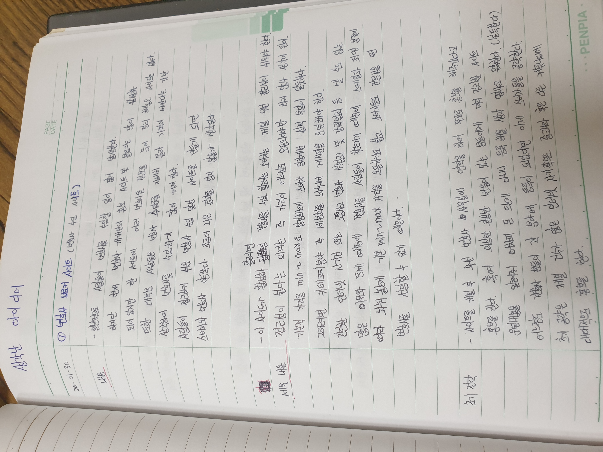

준오의 html 을 이용한 웹페이지 만들기
변호사 사이트
애견용품 지그재그
휴대폰 펫 키우기
상담사이트
준오가 생각한 변호사 사이트란 무엇인가?
사람들은 보통 살면서 변호사를 수임할 일이 저마다 한번씩 이상은 발생한다.
하지만 그들은 어디서 어떻게 변호사를 수임해야 하는지 알 수 없다.
인터넷에 검색해봐도 대부분 각자 개개인 법률사무소를 홍보하는 홍보글 밖에 볼 수 가 없는데
만약 이런 홍보글들을 한곳에 모아 사람들이 보다 조금더 쉽게 변호사를 수임할 수 있게 만든다면 어떨까?
그럼 사람들은 각자 홍보글들에 맞게 이사람이 내가 처한 일에 대한 변호능력이 경험이 있는지 혹은 바가지를 씌우는지 비교하기 쉽지않을까?
